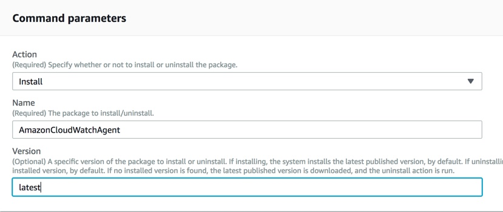
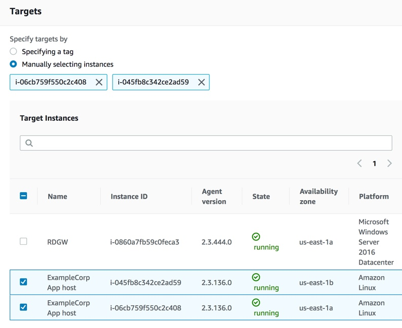
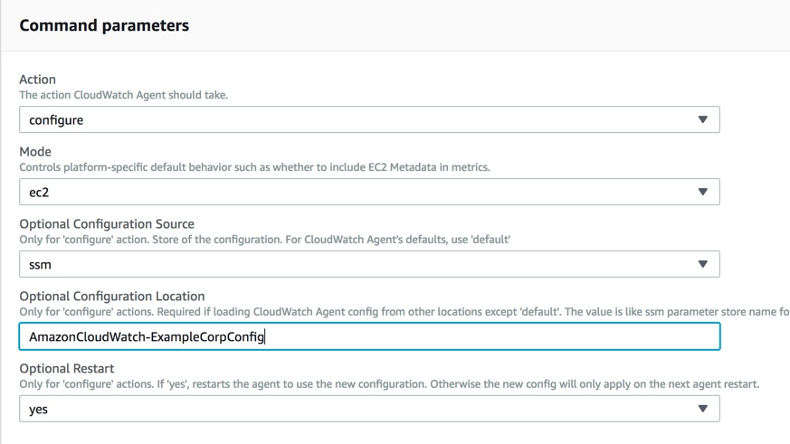
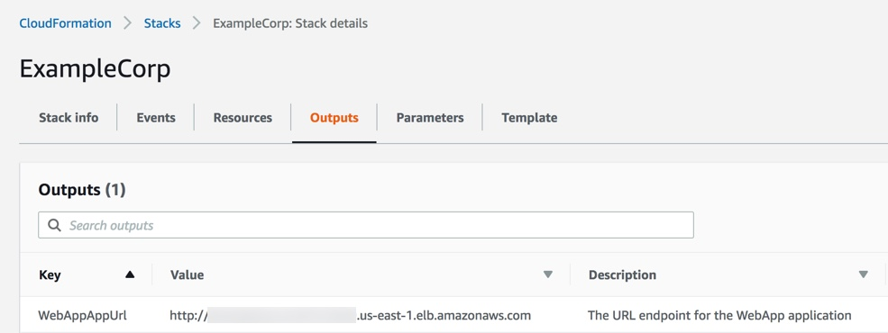
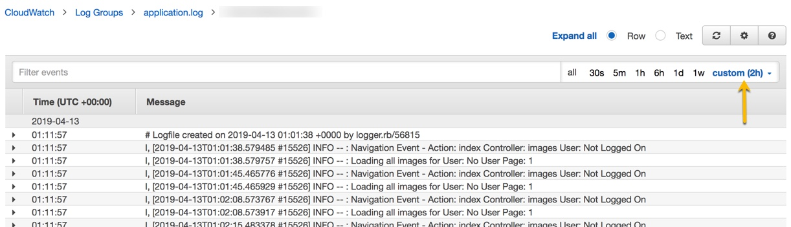

실습3. 원격 분석 수집
원격 분석 수집
모니터링 계획 구현 : 원격 측정
고려 : 목표를 달성하기 위해 어떤 원격 분석을 활용할 수 있습니까? 우리가 가지고 있지 않은 바람직한 원격 측정이 있습니까? 그렇다면 어떻게 얻을 수 있습니까? 필요한 정보를 생성하도록 애플리케이션을 추가로 instrument할 수 있습니까? 필요한 정보를 제공하도록 인프라를 구성할 수 있습니까? (인스트루먼테이션 : 오류를 진단하거나 추적 정보를 쓰기 위해 제품의 성능 정도를 모니터 하거나 측정하는 기능)
우리의 워크로드는 운영이 워크로드 상태와 비즈니스 성과 달성을 이해할 수 있도록 데이터를 생성해야 합니다. 우리는 그 정보를 수집하고 분석한 다음 우리 조직의 이익을 극대화하기 위해 조치를 취해야합니다. 분석이나 조치없이 수집하는 경우, 기껏해야 사건 이후에나 사용할 수 있는 기록을 forensic capacity로 저장하기 위해 비용을 지불해야 합니다. 우리의 목표는 통찰력을 얻는 것입니다.
통찰력의 범주 :
- Faults
- Configuration
- Accounting
- Performance
- Security
- Outcomes
- User Behavior
- Workload Behavior
우리는 이해 관계자 참여, 요구 사항 및 우선 순위 결정, 모니터링 개선 구현, 성공 평가를 반복합니다. 또는 더 간단하게 말하면 : 계획을 만들고, 계획을 실행하고, 계획이 작동하는지 확인하고, 계획을 조정하는 것을 반복하십시오.
3 원격 측정 획득
3 가지 목표에 초점을 맞춰 시작하겠습니다.
- 우리의 애플리케이션 디렉터인 Grace Hopper는 우리의 production application이 고객을 기쁘게하고 있다는 것을 알고 싶어합니다.
- DevOps 엔지니어인 Blaise Pascal은 애플리케이션 문제가 발생할 경우와 보안 문제가 우려되는 시기를 파악하고자 합니다.
- Site Reliability Engineer인 Charles Babbage는 정전, 안정성 및 sleep(항상 페이저를 받기 때문에) 개선에 중점을 둡니다.
3.1 CloudWatch Agent 설치 및 구성
CloudWatch Agent를 사용하여 Amazon EC2 인스턴스에서 지표와 로그를 수집합니다. 온-프레미스 서버가 있는 경우 CloudWatch Agent를 사용하여 해당 서버에서 지표와 로그를 캡처할 수도 있습니다.
CloudWatch Agent는 CloudFormation 스크립트 실행으로 생성된 IAM 역할이 필요합니다. Agent를 설치한 다음 CloudFormation 스크립트에 의해 System Manager Parameter Store에 배치된 사전 정의된 구성을 사용하여 구성합니다.
Parameter Store의 구성을 통해 우리는 그것을 우리의 fleet에 표준으로 쉽게 적용할 수 있습니다. 다음을 따라 더 자세히 알아볼 수 있습니다. Getting Started link.
3.2 Parameter Store configuration 검토
Parameter Store에 있는 구성 파일은 CloudWatchAgentServerPolicy IAM 역할을 활용할 수 있도록 하는 필수 명명 규칙 (AmazonCloudWatch-로 시작해야 함)을 따릅니다. 관리를 단순화합니다. 여기에서 더 많은 것을 배울 수 있습니다. link
- System Manager 콘솔에서 Parameter Store를 클릭하여 엽니다. link.
- AmazonCloudWatch-ExampleCorpConfig를 선택합니다.
- CloudWatch Logs에 수집될 로그 검토
3. Install and Configure the CloudWatch agent Systems Manager Run Command
System Manager의 Run Command를 사용하여 단일 인스턴스에 설치하는 것처럼 쉽게 전체 집합에 CloudWatch agent를 설치하고 구성할 수 있습니다. command document를 사용하여 일관된 실행을 보장하고 수동 프로세스로 인해 발생할 수 있는 오류를 제한합니다.
- 링크를 클릭하여 Systems Manager 콘솔 Run Command 페이지로 이동합니다. link.
- Run command를 선택합니다.
- In the Command document list, select AWS-ConfigureAWSPackage by selecting the radio button next to it.
- In the Action list, choose Install.
- In the Name field, type AmazonCloudWatchAgent
- In the Version field, type latest. 
cwagenttargets
- In the Targets area, Manually select the ExampleCorp instances. You could also target instances by tag. 
- In the Output options area uncheck the box next to Enable an S3 bucket, area check the box next to Enable CloudWatch logs..
- Choose Run.
- Optionally, in the Targets and outputs areas, select the button next to an instance name and choose View output. Systems Manager should show that the agent was successfully installed.
3.3 Configure and (re)start the CloudWatch agent using Systems Manager Run Command
- Open Run Command in the Systems Manager console by clicking on this link.
- Choose Run command.
- In the Command document list, (list에서 4 page 정도 선택) select AmazonCloudWatch-ManageAgent by selecting the radio button next to it.
- In the Command Parameters area
- In the Action list, choose the default configure.
- In the Mode list, choose the default ec2
- In the Optional Configuration Source list, choose the default ssm.
- In the Optional Configuration Location box, type the name of the agent configuration file that we created and saved to Systems Manager Parameter Store AmazonCloudWatch-ExampleCorpConfig 
- In the Optional Restart list, choose yes to start the agent after you have finished these steps.
- In the Targets area, choose the instance where you installed the CloudWatch agent.
- In the Output options area uncheck the box next to Enable an S3 bucket, area check the box next to Enable CloudWatch logs.
- Choose Run.
- Optionally, in the Targets and outputs areas, select the button next to an instance name and choose View output. Systems Manager should show that the agent was successfully started
통합 CloudWatch Agent를 사용하여 로그 및 지표를 수집하는 방법에 대해 자세히 알고 싶으십니까? Follow this link.
(Optional Exercise) Review the Collected Application Logs [with the development team]
비즈니스, 개발 및 운영팀이 더 통합 될수록 더 성공적일 것입니다. 맞춤형으로 개발된 애플리케이션은 다양한 로그를 내 보냅니다. 개발자가 콘텐츠, 의미 및 목적에 대한 통찰력을 얻도록 참여하면 모니터링에서 가치를 얻는 데 걸리는 시간이 단축됩니다.
- Navigate to the CloudWatch Logs dashboard at this link.
- Choose application.log from the Log Groups list
- Choose the Log Stream of your instance
- Review the available logs
3.4 Generate logs through user activity
- In a web browser navigate to the URL Output of the Example Corp CloudFormation Stack to reach the ExampleCorp application

- Create an account by choosing Sign up and then choosing login at the Log in page.
- Enter an Email address, a Username, and a Password and choose Sign up
- There is no validation on the email address you provide so you may use a fake address
- Upload some photos
- you can either use your own photos or
- download sample photos here Note: There are 76MB of images
- Navigate to the CloudWatch Logs dashboard at this link.
- Choose application.log from the Log Groups list
- Choose the Log Stream of an instance
- At the top right of the grey field, in the time window definition box, choose the pull down.
- Choose to Relative, by clicking on the term.
- Choose 2 Hours 
- Review the recent logs. Enter a Tag value identified by ExampleCorp in the Filter Events text box and review the associated logs.
(Optional) 3.5 Publish VPC Flow Logs to CloudWatch Logs
VPC 흐름 로그를 CloudWatch Logs로 변환, 흐름 로그 데이터가 로그 그룹에 게시되고 각 네트워크 인터페이스가 로그 그룹에 고유한 로그 스트림을 갖는 경우). 로그 스트림에는 흐름 로그 레코드가 포함됩니다. 데이터를 동일한 로그 그룹에 게시하는 여러 흐름 로그를 생성할 수 있습니다. 동일한 네트워크 인터페이스가 동일한 로그 그룹의 하나 이상의 흐름 로그에 있는 경우 하나의 결합된 로그 스트림을 가집니다. 하나의 흐름 로그가 거부된 트래픽을 캡처하고 다른 흐름 로그가 승인된 트래픽을 캡처하도록 지정한 경우 결합된 로그 스트림은 모든 트래픽을 캡처합니다. For more information, see Flow Log Records.
수집된 VPC Flow Log 데이터를 어떻게 사용할지 생각해 보십시오. 내부 네트워크에서 의도된 트래픽과 의도하지 않은 트래픽의 가시성은 문제 진단을 용이하게 할 수 있습니다. 기본적으로 인터넷 게이트웨이에서 거부된 트래픽을 캡처하면 제한된 값으로 많은 데이터를 저장하고 처리할 수 있습니다. 필요한 경우 언제든지 기능을 활성화한 다음 value your get from CloudWatch를 최적화하기 위해 더 이상 필요하지 않은 경우 기능을 비활성화할 수 있습니다.
(Optional) Create a flow log for your VPC
Note: CloudFormation 스크립트에 의해 다음 단계가 완료되었습니다.
- Amazon VPC 콘솔을 열고 링크를 클릭하여 VPC로 이동합니다. link.
- ExampleCorp VPC를 선택한 다음 작업, flow log 생성을 선택합니다.
- Filter의 경우 풀다운 목록에서 All을 선택하여 허용 및 거부된 트래픽을 기록합니다.
- For Destination, 기본 CloudWatch Logs로 보내기를 선택합니다.
- For Destination log group, 흐름 로그를 게시할 CloudWatch Logs에 로그 그룹의 이름을 입력합니다. 존재하지 않는 로그 그룹의 이름을 지정하면 로그 그룹 생성을 시도합니다. Destination log group* 아래의 텍스트 상자에 ExampleCorpVPC를 입력합니다.
- For IAM role select the role with name in the form (your stack name)-FlowLogsRole-(random string). 이것은 CloudWatch 로그에 로그를 게시할 수 있는 권한을 가진 CloudFormation 스크립트에서 생성되었습니다.
- Choose Create.
- Open the CloudWatch console and navigate to Logs by clicking on this link.
What have we accomplished?
이제 모든 인스턴스가 CloudWatch Logs에 로깅되고 있으며 VPC도 CloudWatch Logs에 로깅됩니다. 인스턴스와 AWS services 가 CloudWatch에 지표를 게시하고 있습니다 애플리케이션 및 워크로드는 AWS X-Ray와의 통합을 통해 추적을 제공합니다. 사용 가능한 원격 분석을 수집하고 있으며 이제 분석하고 활용할 때입니다.